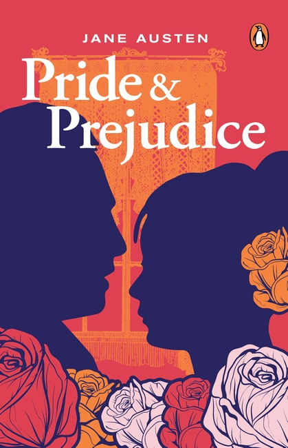
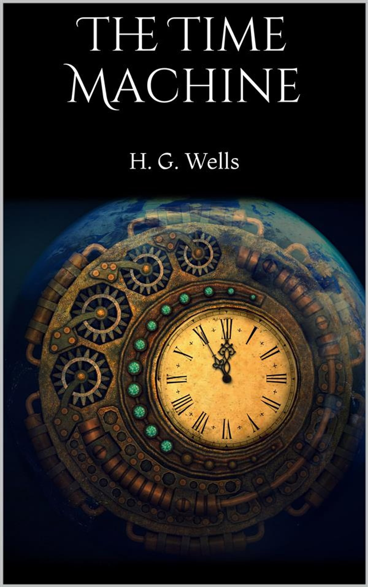

| Book Image | Title | Author Name | Customer Review |
|---|---|---|---|
|

Rating★★★★★ |
Pride And Prejudice | Jane Austen | This classic novel "Pride And Prejudice" Jane Austen by explores themes of love, marriage, and social class. It follows the story of Elizabeth Bennet and Mr. Darcy, whose initial misunderstandings and prejudices eventually give way to mutual understanding and affection. |

Rating★★★★★ |
Romeo And Julliet | William Shakespeare | This iconic tragedy tells the story of two young lovers from feuding families in Verona. Despite the obstacles, Romeo and Juliet's passionate love leads them to defy their families and face the tragic consequences of their union. |
|

Rating★★★★★ |
THE TIME MACHINE | H.G Wells | A pioneering work in time travel literature, following the journey of the Time Traveller to distant futures. Wells' exploration of societal evolution and human nature remains a cornerstone of the genre. |
|
Rating★★★★★ |
Roadside Picnic | Arkady And Boris Strugatsky | A mysterious and atmospheric tale about the aftermath of an alien visitation zone, explored by stalkers searching for artifacts. Its dark and philosophical nature captivates and provokes thought. |

Rating★★★★★ |
It Ends With Us | Colleen Hoover | An emotional and powerful story of love, resilience, and personal growth, addressing the complexities of relationships and abuse. |

Rating★★★★★ |
The Silent Patient | Alex Michaelides | A gripping and twisty thriller about a woman who stops speaking after being accused of murdering her husband, and the therapist determined to uncover the truth. |

Rating★★★★★ |
Such A Fun Age | Kiley Reid | A sharp and thought-provoking novel exploring race, privilege, and the dynamics of a young black babysitter and her white employer. |

Rating★★★★★ |
A Slow Fire Burning | Paula Hawkins | A tense and twisty psychological thriller about the intertwined lives of three women connected by a gruesome murder. |

Rating★★★★★ |
The Paper Palace | Miranda Cowley Heller | A beautifully written and emotionally charged story of love, betrayal, and the choices we make, set in a rustic summer camp. |

Rating★★★★★ |
Beautiful World, Where Are You | Sally Rooney | A contemporary novel exploring the complexities of friendship, love, and social media through the lives of four young people. |

Rating★★★★★ |
Flight 232: A Story of Disaster and Survival | Laurence Gonzales | A detailed and gripping account of the United Airlines Flight 232 crash in 1989, highlighting the heroism and survival against the odds. |

Rating★★★★★ |
Passenger 19 | Ward Larsen | An ex-CIA operative investigates the suspicious crash of a commercial airliner in the Colombian jungle, uncovering a deeper conspiracy. |